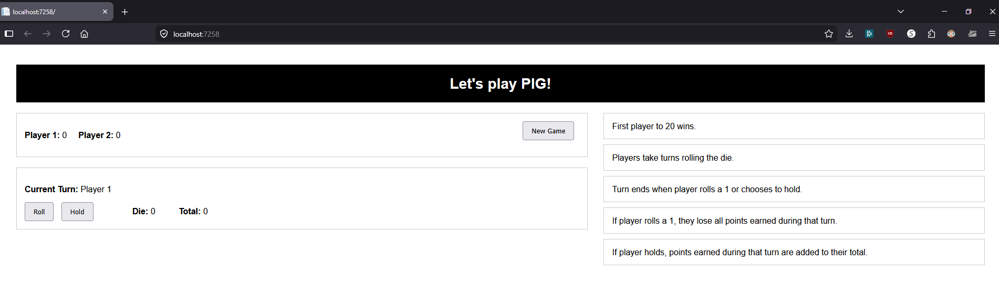

Welcome
In this Project, I created a one page web application built on ASP.NET Cord MVC. It create the game Pig Dice game. In this aplicaiton, I use the MVC pattern and uses session state to save the game inbetween request. The front end was built with Razor views and css code to create a simple page UI. This project show the use of MVC, Razor, syntax, session state management, controllers action, object-orented design, and server-side game logic

Sample code
using Microsoft.AspNetCore.Mvc;
using CIS296_Exam2.Models;
using Microsoft.AspNetCore.Http;
using System.Text.Json;
namespace CIS296_Exam2.Controllers
{
public class PigGameController : Controller
{
private const string SessionKey = "PigGameSession";
private static Random rnd = new Random();
private PigGame GetGameFromSession()
{
var sessionData = HttpContext.Session.GetString(SessionKey);
if (sessionData == null)
return new PigGame();
return JsonSerializer.Deserialize(sessionData)!;
}
private void SaveGameToSession(PigGame game)
{
HttpContext.Session.SetString(SessionKey, JsonSerializer.Serialize(game));
}
public IActionResult Index()
{
var game = GetGameFromSession();
return View(game);
}
[HttpPost]
public IActionResult NewGame()
{
var game = new PigGame();
SaveGameToSession(game);
return RedirectToAction("Index");
}
[HttpPost]
public IActionResult Roll()
{
var game = GetGameFromSession();
if (game.GameOver) return RedirectToAction("Index");
Random rand = new Random();
int roll = rnd.Next(1, 7);
game.LastRoll = roll;
if (roll == 1)
{
game.TurnTotal = 0;
game.CurrentPlayer = game.CurrentPlayer == 1 ? 2 : 1;
}
else
{
game.TurnTotal += roll;
}
SaveGameToSession(game);
return RedirectToAction("Index");
}
[HttpPost]
public IActionResult Hold()
{
var game = GetGameFromSession();
if (game.GameOver) return RedirectToAction("Index");
if (game.CurrentPlayer == 1)
game.Player1Score += game.TurnTotal;
else
game.Player2Score += game.TurnTotal;
if ((game.CurrentPlayer == 1 && game.Player1Score >= PigGame.WinningScore) ||
(game.CurrentPlayer == 2 && game.Player2Score >= PigGame.WinningScore))
{
game.GameOver = true;
game.Winner = $"Player {game.CurrentPlayer}";
}
game.TurnTotal = 0;
game.CurrentPlayer = game.CurrentPlayer == 1 ? 2 : 1;
SaveGameToSession(game);
return RedirectToAction("Index");
}
}
}